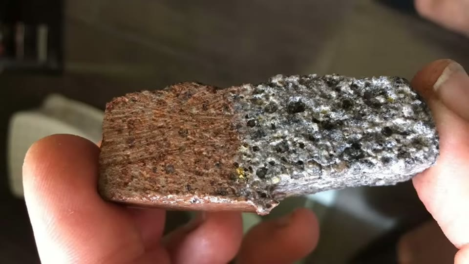
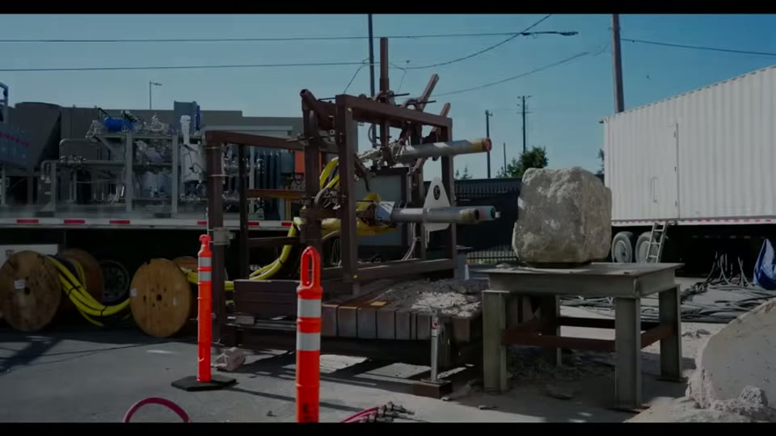

Curious Being
Aswan Quarry Scoop Marks: A Groundbreaking New Hypothesis
Tina · 20 min · watch on YouTube · summarised 2026-09-27
A follow-up to the earlier scoop marks entry, answering objections that came back from it. Two-thirds of the video is elimination, and that is the part with teeth.
Her starting position, restated 00:18–01:45: granite cannot be softened to a ductile state by frequency or heat for quarrying, and there is no scooped-out granite lying around Aswan to show that anything was scooped. So the marks were left by a tool that broke the rock down along a scoop-shaped path, not by softening. Three features of that tool follow from the marks themselves — a consistent 40 cm width, so it had a defined cutting face; surfaces that are uneven, patchy and bumpy rather than smooth; and paths that curve and change angle mid-cut. Her reading is that it was a rough-shaping tool used to free blocks from bedrock, not a precision one.
Water jets: ruled out on four counts
03:18–07:35 The scoop marks come in two forms — square indents of about 40 × 40 cm laid out like a chessboard, and vertical bands also about 40 cm wide.
- Nozzle size. Water jet nozzles run 0.1 to 1.5 mm for precision work and 2 to 6.35 mm for high-speed bulk cutting. Even the largest is under 2% of 40 cm. Widening the nozzle to anything approaching that disperses the stream and the abrasive, and the cutting stops working.
- Depth. The vertical marks run about 4 m. An abrasive water jet cuts granite roughly 12 inches per pass, so reaching the bottom of the obelisk trench would take about thirteen passes at one spot.
- What passes leave behind. Each pass leaves a ridge or groove — horizontal lines or terraces, and striations at slightly different angles between passes. The Aswan vertical marks show none of this.
- Surface character. Water jet faces are typically straight and smooth, with vertical or diagonal striations concentrated at the bottom of the cut. The scoop marks are soft, wavy and bumpy.
She adds that water jets need a great deal of water, which is a consideration in a desert.

Water jet cuts are straight and striated; the scoop marks are soft, wavy and bumpy. The two do not look alike.
The natron theory: ruled out on six
07:36–13:24 The theory, which she attributes to Marcell Fóti (@FoMaHun, whose posts she quotes on screen), is that Egyptians burned natron (sodium carbonate) on the granite; the molten natron attacked the quartz to produce water glass, etching and weakening the rock, which was then pounded out with dolerite balls.
Her objections, in order of how checkable they are:
1. Colour. The reaction visibly changes the rock, and his own posted photograph shows that change. The granite at Aswan is the same colour across every scooped area. The sample he photographs is half ordinary pink-grey granite and half a pale blistered crust, and the boundary between them is abrupt. 2. No edges. An irreversible chemical reaction should leave traces at the boundary between treated and untreated stone. No scoop mark edge at Aswan shows chemical erosion or dissolved quartz. 3. Penetration depth. Granite is dense and low-porosity. Strong acids — hydrochloric, hydrofluoric — penetrate 1 to 3 mm under favourable conditions; some sealers reach 10 mm. How far molten natron gets is not established, and the method's effectiveness depends on it. 4. Cost. His own footage uses a large block of natron and a great deal of charcoal to produce a small shallow depression. Egypt has been desert with scarce woodland for 5,000 years and charcoal had to be made from limited timber. Fóti's own post makes the point for her — "God, how many charcoal I wasted just to create a minimal size depression on the surface of granite in plain air!" 5. The shapes make no sense chemically. Why would a chemical treatment confine itself to individual 40 × 40 cm squares and 40 cm bands? And if the aim was a trench to free the obelisk, why cut neat vertical bands on the non-obelisk side, and curved corners, and a ridged trench floor? None of that is needed to separate a block. 6. The residue that is not there. This is the sharpest one 11:27–12:43. The reaction leaves white foamy lumps of sodium silicate. Removing it means dissolving it with strong alkalis or acids, which would alter the stone's appearance, or scraping and chipping it off. Dissolved quartz leaves cavities that would fill with the white product. Even granting some flawless removal technique, there was no reason to clean the discard side of the trench — and there is no sodium silicate anywhere on site. Fóti's post again supplies the other half: he points at the pale foam in his own result and names it "the same waterglass".
Both of her strongest natron objections are confirmed in the words of the researcher she is answering, which is unusual and worth noting. She is not characterising his method; she is quoting his account of it and asking why the same evidence is absent at Aswan.
She notes the same objections apply to chemical quarrying proposals generally: expanding grout in pre-drilled holes does not make scoop marks, and acid dissolution is a slow process used on powdered rock, not for extracting dimensional stone.



The natron method changes the rock's colour and leaves white sodium silicate behind. Neither is present at Aswan.
What she puts in their place
13:25–18:15 Having ruled out mechanical force and chemistry, she is left with heat, and she is explicit that this is where the hypothesis begins.
The comparison she offers is a plasma spallation machine built by Earth Grid, a Bay Area tunnelling company that announced plasma tunnel-boring development in 2023. Its torches reach a stated 27,000 °C, vaporising rock rather than cutting it, and the company has tested one-, two- and three-torch heads.
A two-torch test on a granite block leaves a depression with a defined outline at the top, soft curved lower edges, and two scoop-like indents. Her structural observation is the interesting one: the Aswan "chessboard" squares have roundish basin bottoms, like a half-ball baking tray — so if each torch burns a circular basin, the leftover ridges between a grid of basins would read as squares.
Then footage from June 2025 at a Sierra granite quarry, where a two-torch system cuts a channel into bedrock. She reads off four resemblances: the channel is roughly 40 cm wide judged against people standing beside it; its opening deviates from straight in the same way the obelisk trench does; its top edge is rounded; and its wall carries slanted vertical stripes each ending in a curved corner at the floor.


A modern plasma spallation head cutting granite leaves a hollow with a defined top edge and soft curved lower edges, which she reads as the closest match to the scoop marks she has found.

A plasma torch system cutting a channel in a quarry produces a trench of roughly the right width, deviating from straight, with a rounded top edge and vertical stripes on its wall.
Her conclusion 18:35–19:10: flame torches for stone cutting appeared in the 1950s and plasma boring in the last few years. Neither existed in dynastic Egypt. If the scoop marks were made this way, the Unfinished Obelisk was quarried by an earlier civilisation with plasma technology and cranes able to move it.
What you can check yourself
- The 40 cm figure. The square indents and the vertical bands can be measured, and the claim that they are consistent is a counting exercise anyone at the quarry can do.
- Water jet nozzle specifications are published by manufacturers, as are cut rates for granite and the appearance of multi-pass cuts. Every number in that section is checkable against a trade catalogue.
- The absence of sodium silicate at Aswan is a physical claim about the site and the strongest thing in the video — a white residue is either there or it is not, and it does not depend on any theory of how the marks formed.
- The colour of the granite across scooped and unscooped areas can be compared in any photograph of the quarry.
- Fóti's posts are public — dated, named and quoted on screen — so both his method and her reading of it can be checked against the originals rather than taken second hand.
- Earth Grid is a real company with public material, including the granite test and the Sierra quarry channel, so the comparison images can be looked at directly rather than taken on trust.
What the video does not settle
- The positive hypothesis is a resemblance, not a demonstration. Nothing links the Aswan marks to a plasma torch except that the two look alike in several respects. No residue analysis, no thermal alteration study of the Aswan granite, no test reproducing a 40 cm band.
- Her own earlier proposal and this one are different technologies, and the difference carries the conclusion. The previous video proposed a flame-jet torch, which is documented industrial practice from the 1950s and needs only fuel and oxygen. This video's comparison is plasma boring at 27,000 °C, invented in the last few years. The leap to a lost civilisation only follows if the marks require plasma specifically; if any sufficiently hot thermal method would do, the argument about what was available when changes shape entirely. The video does not address this.
- The 40 cm match at the Sierra quarry is eyeballed, from people standing near the channel. No measurement is given.
- Thermal spallation on granite should leave signatures — heat-altered mineral surfaces, micro-cracking, colour change from iron oxidation. She applies exactly this test to the natron theory and does not apply it to her own. Whether Aswan's scoop marks show thermal alteration is not examined.
- "There is no scooped granite nearby" is asserted, not sourced. It is load-bearing for rejecting the softening idea and no survey is cited.
- The dolerite-ball explanation is not re-examined here. It is mentioned as part of the natron theory and otherwise left where the previous video put it.
- The resemblance is looser than the narration implies in one place. The right-hand panel of her central comparison shows a single large irregular cavity eaten into a granite block, not a row of regular crescent bands like the Aswan wall beside it. The panels are labelled honestly and the reader can see both, but "not too different" is doing some work.
- The Sierra channel is cut into a flat pale surface that does not visibly read as bedrock in the frame. What it is cut into is not stated on screen.